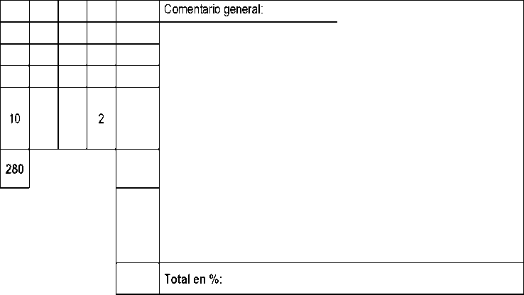

Concurso:
Jinete:
Tiempo: 5'40", (solo como información) Filete simple opcional , , ,___________________________________, Edad mínima del caballo: 7 años
|
Movimientos |
Puntos |
(Ü o |
Corrección |
Coeficiente |
Nota final |
Directrices |
Observaciones | ||
|
1 |
A X |
Entrada a galope reunido Parada, saludo Partir a trote reunido |
10 |
Calidad de los aires, parada y transiciones. Rectitud. Contacto y nuca. | |||||
|
2 |
C MB |
Pista a mano derecha Espalda adentro |
10 |
Regularidad y calidad del trote, mantener incurvación y ángulo. Reunión, equilibrio, fluidez. | |||||
|
3 |
BLK K |
Cambio de mano a trote medio Trote reunido |
10 |
Regularidad, elasticidad, equilibrio, remetimiento de posteriores. Alargamiento de los trancos y de la línea superior. Las dos transiciones. | |||||
|
4 |
A DG C |
Doblar por la línea central Tres contracambios a la izquierda y a la derecha, a 5, 10, 5 m. de la línea del centro, terminando a la izquierda Pista a mano izquierda |
10 |
2 |
El posicionamiento correcto, la regularidad y fluidez del apoyo y de los cambios de dirección. El equilibrio. La reunión | ||||
|
5 |
HE |
Espalda adentro |
10 |
Regularidad y calidad del trote, mantener incurvación y ángulo. Reunión, equilibrio, fluidez. | |||||
|
6 |
ELF F (FAK) |
Cambio de mano al trote medio Trote reunido El trote reunido |
10 |
Regularidad, elasticidad, equilibrio, remetimiento de posteriores. Alargamiento de los trancos y de la línea superior. Las dos transiciones. | |||||
|
7 |
KXM M |
Cambio de mano al trote largo Trote reunido |
10 |
Regularidad, elasticidad, equilibrio, remetimiento de posteriores. Alargamiento de los trancos y de la línea superior. Las dos transiciones. | |||||
|
8 |
Transiciones del largo a reunido y del reunido al largo |
10 |
Mantener el ritmo, fluidez, precisión y suavidad. Cambio de actitud. | ||||||
|
9 |
C (CHS) |
Paso medio El paso medio |
10 |
Regularidad, relajación del dorso, actividad, amplitud media, libertad de las espaldas. Transición al paso. | |||||
|
10 |
SXP |
Cambio de mano al paso largo |
10 |
2 |
Regularidad, relajación del dorso, actividad, amplitud, libertad de las espaldas, buscar el contacto. | ||||
|
11 |
P F (PFD) |
Paso reunido Doblar a la derecha El paso reunido |
10 |
2 |
Regularidad, relajación del dorso, actividad, acortamiento y elevación del paso, porte. | ||||
|
12 |
D |
Parada, 6 pasos atrás, partir a galope reunido a la derecha |
10 |
Calidad de parada y transiciones. Pasar a través, fluidez, rectitud. Precisión en número de pasos diagonales. | |||||
|
13 |
K VM |
Doblar a la derecha Galope medio |
10 |
Precisión y fluidez de la transición. Calidad del galope. | |||||
|
14 |
M (MCH) |
Galope reunido y cambio de pie El galope reunido |
10 |
2 |
Corrección, equilibrio, fluidez, tendencia cuesta arriba, rectitud. Calidad del galope antes y después | ||||
|
15 |
HXF F |
Galope largo Galope reunido |
10 |
Calidad del galope, impulsión, tendencia cuesta arriba, alargamiento de los trancos y de la línea superior, rectitud. | |||||
|
16 |
Las transiciones del galope reunido a largo y de largo a reunido |
10 |
Precisión y suavidad de las dos transiciones. | ||||||
|
17 |
F |
Cambio de pie |
10 |
Corrección, equilibrio, fluidez, tendencia cuesta arriba, rectitud. Calidad del galope antes y después. | |||||
|
18 |
A L |
Doblar por la línea central Círculo a la derecha de 8 m. |
10 |
Calidad del galope. Reunión, equilibrio. Incurvación uniforme, fluidez |
CLASICA 2
|
Movimientos |
Puntos |
JS o |
Corrección |
Coeficiente |
Nota final |
Directrices |
Observaciones | ||
|
19 |
X |
Cambio de pie |
10 |
Corrección, equilibrio, fluidez, tendencia cuesta arriba, rectitud. Calidad del galope antes y después. | |||||
|
20 |
I |
Circulo a la izquierda de 8 m. |
10 |
Calidad del galope. Reunión, equilibrio. Incurvación uniforme, fluidez | |||||
|
21 |
G |
Cambio de pie |
10 |
Corrección, equilibrio, fluidez, tendencia cuesta arriba, rectitud. Calidad del galope antes y después. | |||||
|
22 |
C B X G |
Pista a mano derecha Doblar a la derecha Doblar a la derecha Parada, inmovilidad y saludo |
10 |
Calidad del aire, de la parada y de la transición. Rectitud. Contacto y nuca. | |||||
|
Salir de la pista por A al paso en riendas largas | |||||||||
|
Total |
260 | ||||||||
Notas de conjunto
Total
1 Impresión General (Armonía y presentación, posición y asiento del jinete/amazona, corrección y efecto de las ayudas).
Total
A deducir
Error de recorrido:
1° vez = 0,5% del porcentaje total
2° vez = 1 % del porcentaje total
3° vez = Eliminación
Otros errores, no acumulativos para eliminación
• Entrar alrededor de la pista con fusta, ó
• Entrar en la pista con fusta, ó
• No entrar en la pista en los 45” después del toque de campana, ó
• Entrar en la pista antes del toque de campana, etc...
0,5% (puntos porcentuales) a descontar por cada error. Ver Art 429.8
Copyright © 2022 Real Federación Hípica Española. Reproducción estrictamente reservada.
Revisión 2022 D-CL2- pág. 2